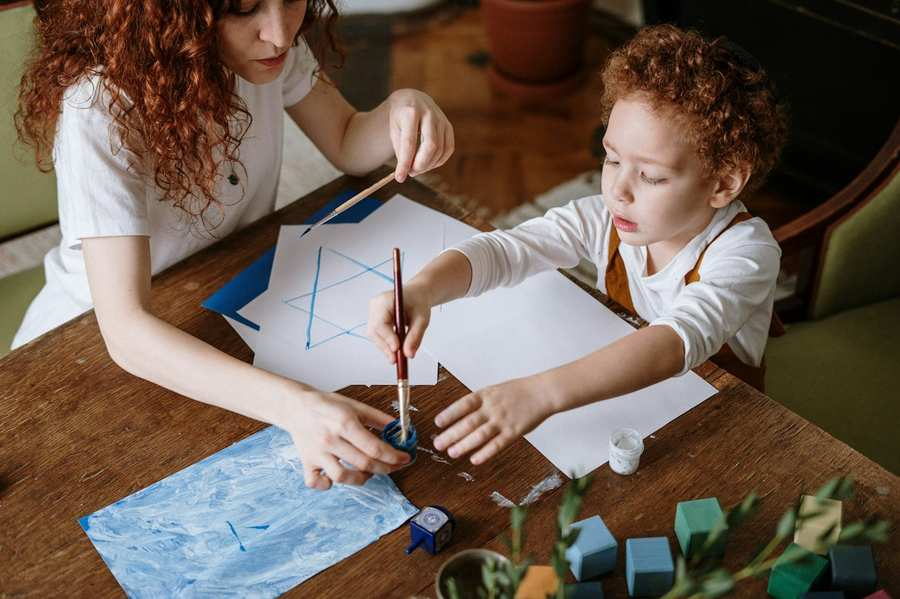

בית ספר וחינוך
עם מגוון רחב של הצעות חינוכיות, נוער ותרבותיות, ה-Israelitische Kultusgemeinde Wien (הקהילה היהודית של וינה) יוצר מגוון רחב של הצעות למשפחות וילדים. בדרך זו, יחד אנו שומרים על החיים היהודיים בווינה ובאוסטריה ומציעים לילדינו קהילה שבה הם יכולים להתחיל את עתידם בבטחה. עם התשתית היהודית המצוינת שלה, וינה מציעה מגוון הזדמנויות חינוכיות לילדים ולמבוגרים. ה-IKG Wien מפעיל שני מוסדות חינוך: בית הספר Zwi Perez Chajes והמרכז להכשרה מקצועית יהודית (JBBZ). יש גם טיפול יהודי ובתי ספר אחרים בווינה, המשקפים את כל המגוון של היהדות בווינה.
חינוך יהודי דתי
לכל התלמידים הלומדים בבית ספר ממלכתי בוינה, מוצע חינוך יהודי דתי מוכר רשמית כמקצוע חובה לכל הכיתות. המשמעות היא שניתן ללמוד בחינוך דתי יהודי ללא קשר למוסד החינוכי, מבית הספר היסודי ועד התיכון. ההרשמה יכולה להתבצע דרך בתי הספר המתאימים. במסגרת חינוך דתי זה מסיימים מספר רב של תלמידים את המקצוע "דת יהודית" - כיתת התיכון נלמדת על ידי רב קהילתנו שלמה הופמייסטר מזה שנים רבות. את פרטי ההתקשרות של המורים הדתיים תוכלו למצוא כאן.
הצעות משפחתיות בוינה
פאצ'ו מעורב
משפחות יהודיות מתכננות פעילויות משותפות כמו טיולים, קורסים או חוויות בחגים במסגרת משפחות.
יותר


בית הספר צבי פרז צ'אגס
בית הספר צבי פרז צ'אגס הוא המוסד החינוכי המרכזי בקהילה שלנו. המשמר הוא האגודה לשימור בית הספר Zwi Perez Chajes של Israelitische Kultusgemeinde Wien (הקהילה היהודית של וינה). מתחם בניינים בן ארבע קומות (שנועד לכ-600 ילדים) מכיל גן ילדים (עם גן ילדים), בית ספר יסודי עם צהרונים ובית ספר תיכון. בית הספר שואף למטרות "חינוך יהודי, השכלה כללית, פיתוח אישיות ושילוב" ביחידה מורכבת. קשר זה, שניתן למצוא בכל תחומי הפעילות בבית הספר והגן, מהווה את המאפיינים והייחודיות של בית הספר ZPC. למידע נוסף בקר: https://www.zpc.at/

המרכז להכשרה מקצועית יהודית
ה-JBBZ (המרכז להכשרה מקצועית יהודית) הוא פרויקט אינטגרציה ייחודי באירופה. כמוסד של שירות שוק העבודה, הוא תורם תרומה משמעותית להשתלבות של יהודים בשוק העבודה האוסטרי.
מסלולי ההכשרה ב-JBBZ כוללים את שנת לימודי חובה ט', חניכות לצעירים ולמבוגרים בתחומי טכנולוגיית מחשבים, טכנולוגיה אורטופדית, ניהול משרדים, בנקאות ומכירות ספרים. קורסי הכנה והשתלמויות לשפות ומיומנויות חברתיות וכן צעדי הכשרה מקצועית ומבחן בגרות מקצועית משלימים את ההצעה.
המטרה של JBBZ היא להיות "הכי טוב בכיתה". משמעות הדבר היא קידום מיטבי של הפוטנציאל של הלקוחות על ידי ביצוע צעדי הסמכה המבטיחים השתלבות בשוק העבודה האוסטרי.
למידע נוסף, ראה: https://www.jbbz.at/
בתי ספר יהודיים בווינה
כאן תמצא סקירה של בתי ספר יהודיים ומוסדות חינוך יהודיים אחרים בווינה.